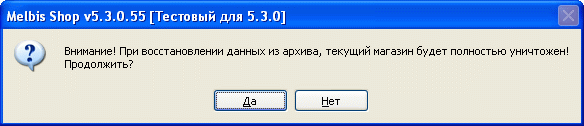
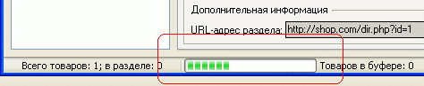

В случае переноса данных с одной машины на другую или их уничтожения (повреждения) имеется возможность восстановления базы данных из ранее созданного архива (см. "Резервное копирование локальной базы данных"). Вызов утилиты восстановления осуществляется из главного меню "Утилиты - Локальная база данных - Восстановление базы данных".
Описываемая здесь утилита восстановления касается данных, хранящихся на локальной машине, и не затрагивает данные, хранящиеся на сервере. Резервное восстановление данных, хранящихся на сервере, как правило осуществляется силами его владельцев или может быть выполнено отдельно - см.раздел "Восстановление серверной базы данных".
Следует осознавать, что при восстановлении базы данных текущее состояние магазина, с которым производится работа, полностью уничтожается, о чем выдается соответствующее предупреждение:

В случае согласия восстановить данные, появляется окно, в котором следует указать месторасположение файла-архива, после чего и происходит восстановление базы данных, при этом в нижней части главного окна программы Melbis Shop появляется индикатор хода процесса восстановления:
